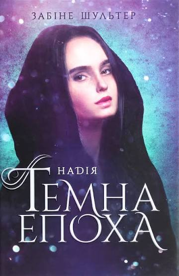

Темна епоха. Надія
Опис
Після того як Ліз відновлює свої спогади, їй важко відкинути минуле і залишити Семюеля позаду. Її почуття провини перед ним не дозволяє їй і Ніку знову зблизитися. Нік, натомість, упевнений, що його почуття глибокі, і готовий чекати на рішення Ліз. Проте підступність Темних не дає двоом закоханим можливості відпочити від пережитого та все обміркувати. Ситуація погіршується щодня, Темних стає дедалі більше, Воїни не витримують нападів, а Ліз, наймогутніше Джерело Академії, досі вважається зрадницею...
Відгук автора сайту
«Гідне продовження першої частини, де напруга зростає, а характери персонажів розкриваються ще глибше. Динаміка подій не дає відірватися від читання, залишаючи сильний емоційний післясмак.»